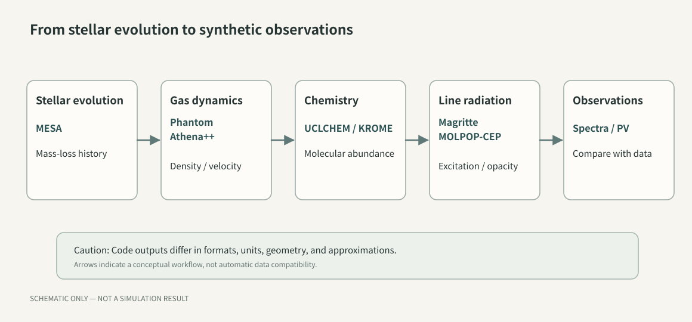
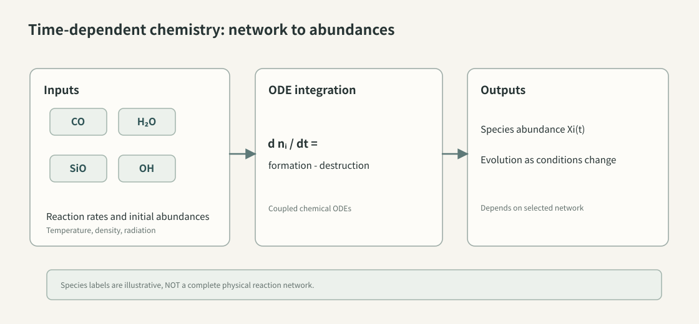
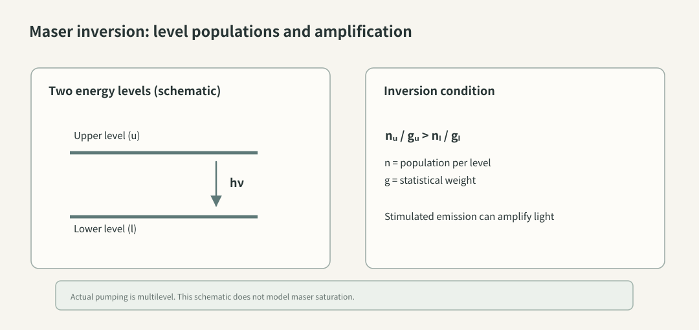
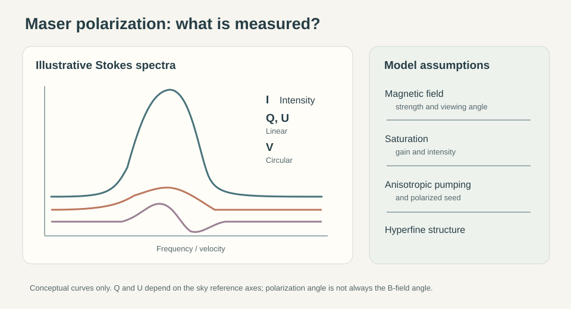
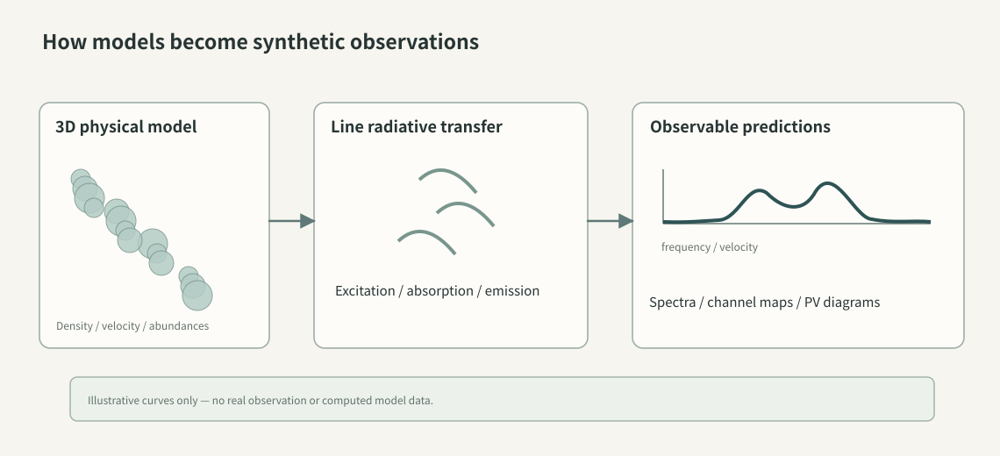
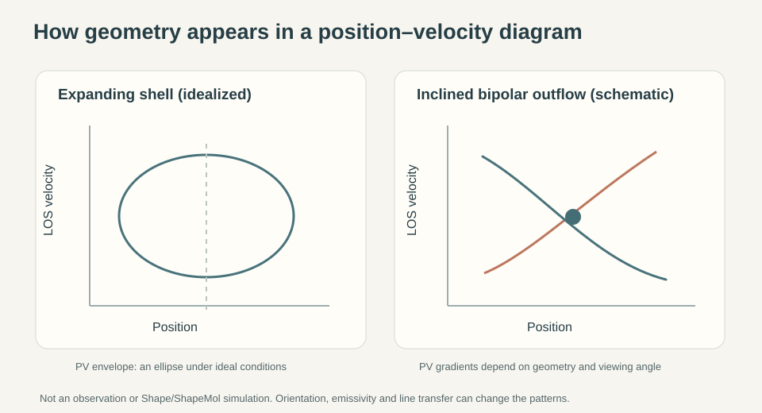
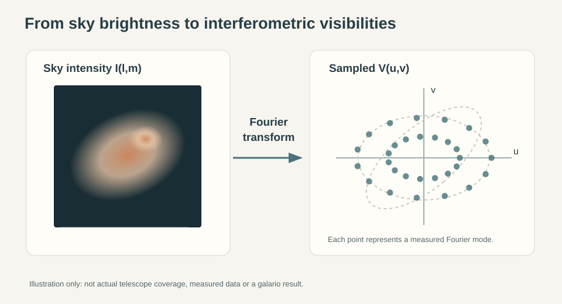

Numerical Astrophysics
原稿・資料確認：2026年11月8日
天体物理の数値計算コード・総合ガイド
計算機の中で、星の一生と 星周ガスを動かす 恒星進化・分子化学・メーザー・偏光・電波干渉計を結ぶ21の公開コード
星の内部で核融合が進み、やがて外層から大量のガスが放出される。そのガスは膨張し、冷え、分子やダストを形成する。伴星があればガスの流れは非対称になり、衝撃波が生まれる場合もある。さらに、その中で励起された分子が放つ電波を望遠鏡で観測すると、スペクトルや画像、位置―速度図という形で星周物質の様子が現れる。
恒星の内部構造、ガスの運動、化学反応、放射が物質を通り抜ける過程には、それぞれ異なる方程式が必要になる。公開コードも、解く方程式と扱う現象に応じて選ぶ。
以前なら、こうしたプログラムを初めて動かすだけでも相当な手間がかかった。現在は公開コードのドキュメントが充実し、AIによるプログラミング支援を使って、設定ファイルの理解や解析スクリプトの作成を進めやすくなった。AIの支援で設定や解析を進めたときも、計算の妥当性を判断するには、何を仮定し、どの方程式を解いたかを確認する。
このサイトでは、すでに格子法による PLUTO、Athena++ と、粒子法による Phantom を紹介している。今回はそれらと内容を重複させず、星周ガスの研究をもっと幅広い方向に拡張してくれそうな二十一の公開コードを取り上げたい。
既存記事：宇宙のガスの動きを計算する――PLUTO、Athena++、Phantom 実際の数値実験：週末の昼下がり、ガスと磁場を動かしてみた

図1．恒星内部の進化から観測との比較へ至る計算の見取り図。各段階のコードの役割を説明するための独自制作の模式図であり、実際に一連のコードを接続して計算した結果ではない。実際に計算をつなぐには、各段階のデータ形式、近似、時間尺度が合うかを確かめる。原寸SVGを開く・拡大する → 詳説3コード
恒星進化・軌道力学 星の内部進化と、重力による天体の運動を考える。
1．星の内部から考える――MESA
AGB星がどれほど長く生き、外層をどのような速さで失っていくのか。星周ガスの観測を考えるとき、その前提には中心星の進化がある。MESA（Modules for Experiments in Stellar Astrophysics） は、恒星の内部構造と時間発展を主として一次元で計算するための公開ソフトウェアだ。
星の質量や組成を与え、核反応、エネルギー輸送、組成の混合などを追いながら進化を計算する。晩期型星の研究では、とりわけ質量放出の扱いが興味深い。MESAにはReimers、Blöcker、van Loonなどの質量放出処方が用意されており、その選択や係数を変えて、星のエンベロープ質量や進化経路への影響を調べられる。ここでの「質量放出」は星の進化に与える効果を扱うもので、放出ガスの三次元の形までMESAだけで解くこととは違う。
例えば、初期質量の異なるモデルについて、質量放出の処方を変えたときのAGB期の継続時間や終末期の外層質量を比較することができる。観測された質量放出率と、恒星進化モデルの仮定を結び付ける入口になるだろう。AGB期の長さや外層質量は、採用する混合や質量放出の処方にも依存する。これらの処方には複数の選択肢がある。
公式：MESA ／ 質量放出に関する設定（controls）
2．連星運動から、質量放出の形を考える――REBOUND
伴星があると、主星は質量中心の周りを動き、放出した物質の分布にも特徴的な模様が現れうる。この問題を本格的な流体計算で解く前に、「軌道運動だけを考えると何が起こるか」を切り出してみる方法がある。
REBOUND は、重力で相互作用する天体の運動を計算するN体積分器である。Pythonから利用でき、軌道要素を使った初期設定や積分方法の選択がしやすい。高精度の積分器や長期軌道計算向けの積分器が用意され、Windows環境でもPython版を導入できる。
例えばAGB星と伴星を公転させ、主星から仮想的なテスト粒子を一定の初速度で放出するモデルを組めば、軌道運動が粒子分布に生む幾何学的効果を調べる出発点になる。重力や放出速度だけでどこまで特徴が出るかは、興味深い問題だ。
しかしテスト粒子は実際の気体ではない。 ガス圧、衝撃波、放射圧、ダストとガスの結合、冷却は、それぞれ追加の物理として考えなければならない。得られた模様をそのまま星周ガスの流体シミュレーションと呼ぶのは不正確である。
公式：REBOUND ／ 導入ガイド
3．メーザー星の軌道を、銀河系の中で追ってみる――galpy
SiOメーザー源から得られる視線速度を、Gaiaの位置、距離、固有運動と組み合わせると、天体の三次元位置と速度を推定できる場合がある。その星が銀河系の中をどのような軌道で動いてきたのか、重力ポテンシャルを仮定して計算してみるのも興味深い。
galpy は、銀河系などの重力ポテンシャルを表し、その中の軌道を積分するPythonライブラリである。観測座標やAstropyのSkyCoordから初期値を設定し、軌道の投影、軌道要素、作用・角変数などを調べられる。
例えば、信頼できるGaiaの対応天体が得られたSiOメーザー星の一部について、視線速度と距離を組み合わせ、選んだ銀河ポテンシャルのもとで軌道を積分する。ただし、観測が6次元の位相空間を与えることと、それらが十分に正確であることは別問題 だ。とくに進化星では光学中心の変動、連星運動、距離の不確かさ、Gaiaの天体同定の曖昧さが影響しうる。ポテンシャルの選択や太陽の運動の仮定も結果を変える。まず少数例で誤差伝播を含めて試すのが適切だろう。
公式：galpy documentation
詳説3コード
流体・MHD・衝撃波 乱流・ダイナモ、基礎方程式、分子衝撃波を調べる。
4．磁気乱流とダイナモを、基礎方程式から調べる――Pencil Code
Athena++の衝撃波や渦の実験の先には、磁場が乱流中でどのように増幅されるかという問題もある。その研究では、数値解法の精度、粘性や磁気拡散、空間解像度が特に重要になる。
Pencil Code は、高次精度の有限差分法を中心とした流体・MHDの研究コードであり、磁気乱流、ダイナモ、粒子などの問題を扱う。公式のサンプルには、ヘリカルな磁気流体乱流の計算例や数値拡散の設定についての説明がある。
例えば、乱流の駆動方法や磁気拡散率を変え、磁気エネルギーの成長やスペクトルを比較する小規模な数値実験が考えられる。Athena++との違いは、単に「どちらもMHDが解ける」という点ではなく、数値差分の性質と適した物理問題が異なる 点にある。衝撃波の多い問題で高次差分法を使うときは、とくに解像度と拡散係数を変え、数値的な安定性を確かめる。
公式：Pencil Code documentation ／ サンプルとマニュアル
5．方程式を自分で書き、解いてみる――Dedalus
研究用コードには、特定の物理問題に必要な方程式や数値解法があらかじめ整えられたものが多い。けれども、もっと基本的な問い――例えば単純化した流体の波動や不安定性が、どのように成長するか――を自分の方程式から調べたい場合もある。
Dedalus は、偏微分方程式をスペクトル法で解くためのPythonを中心としたフレームワークだ。座標や変数、境界条件、方程式を記述し、初期値問題や境界値問題、固有値問題を解く。公式にはRayleigh–Bénard対流、波動、球面上の流れなど、理論と数値計算をつなぐ例題が用意されている。
例えば成層した流体の微小擾乱から出発し、密度や速度の摂動が時間とともにどう変化するかを調べる。単純な方程式から数値解の収束性を理解していく教材としても面白い。
衝撃波のような不連続を扱うときは、境界条件や方程式に応じて解法を選び、解像度を変えて安定性を確かめる。「何が起きるか」を調べるだけでなく、「なぜその方程式になるのか」を学ぶためのコード として魅力がある。
公式：Dedalus documentation ／ 例題集
6．衝撃波を通過すると、分子はどう変わるのか――Paris–Durham Shock Code
高速の放出物がゆっくり膨張する分子ガスに突入すると、衝撃波によってガスが加熱され、化学反応の速さや分子の励起状態が変わる。衝撃波は単なる「温度の高い層」ではなく、イオン、中性粒子、磁場、化学と放射冷却が結び付いた構造である。
Paris–Durham Shock Code は、星間分子ガス中の衝撃波を対象に、流体・熱・化学過程を結合して計算するコードだ。C型、J型、CJ型などの衝撃波を検討できる。公開ダウンロードページではShock 1.1（2022年5月更新）について、反応ネットワークの改訂と約1500反応の追加、CJ型の積分手法の改良などが説明されている。
一例として、合体後の放出ガスが既存の星周ガスに衝突した状況を単純化し、衝撃波速度、前面密度、磁場を変え、SiOやH₂Oの存在量・温度・冷却過程がどう変化するかを調べることが考えられる。ただし、このコードの通常の適用範囲に星周ガス特有の放射場やダスト物理がそのまま適合するかは確認が必要だ。また、分子が増えたことと、その分子のメーザー放射が強くなることは別の段階 であり、後者には励起・輻射輸送計算が要る。
公式：Paris–Durham Shock Code
衝撃波に伴う化学反応も調べたい場合は、流体・衝撃波分野のParis–Durham Shock Code も参照してください。
7．分子は、時間とともにどう生まれ変わるのか――UCLCHEM
星周ガスにCOやSiO、H₂Oがあるというだけでは、いつ、どのような反応を経てそれらが形成されたのかは分からない。温度、密度、放射場が変われば反応速度も変わる。衝撃波に加熱されたガスが冷える過程では、化学組成そのものが時間発展する。
UCLCHEM は、気相反応とダスト粒子表面の化学反応を組み合わせ、分子の存在量を時間とともに計算するコードだ。Pythonから操作でき、計算の中心にはFortranが用いられる。静的な雲、重力収縮、衝撃波などの物理モデルを使え、最新版のドキュメントでは反応ネットワークを生成するMakeRatesとの連携も案内されている。2026年6月にはv4.0.0が公開されており、古い例題を使うときは、利用する版の入力形式や実行手順を確認する。
例えば、一度高温になったガスが冷却するときに、いくつかの分子の存在量がどのように変化するのか、仮定を変えて比較する実験が考えられる。恒星合体後のガスや衝撃波を受けた星周エンベロープにも、着想としてつながる。そうした環境にUCLCHEMを適用する際は、対象の温度域で反応データが妥当か、元素存在量、初期条件、冷却や放射場の設定が適切かを確かめる。
「分子ができた」という計算結果の背後には、「どの反応をネットワークに含めたか」という選択がある。 そこまで追跡して初めて、モデルと観測を科学的に比較できる。

図3．化学反応ネットワーク、物理環境、時間発展する分子存在量の関係を示す独自制作の概念図。線で結んだ分子は、実際の網羅的な反応経路や速度係数を表すものではない。原寸SVGを開く・拡大する → 公式：UCLCHEM ／ GitHub ／ リリース履歴
8．紫外線が分子の世界を変える境界を追う――3D-PDR
中心星の温度が上昇して紫外線が強くなると、電離や光解離の進み方は遮蔽の度合いによって変わる。遮蔽の強い内部には分子が残り、表面から内部にかけて原子と分子の分布が変化する。これを立体的な密度構造の中で調べるには、放射場の向きと減衰を考慮しなければならない。
3D-PDR は、任意の三次元形状の光解離領域（PDR）を対象に、遠紫外線の伝搬、化学反応、ガスの加熱・冷却、分子・原子輝線の計算などを結び付けるコードだ。ITAMOSプロジェクトの資料では、改良版にRAYTHEIA という高速三次元光線追跡法を導入したと説明されている。
例えば、post-AGB星の周囲に密度の高い球殻やトーラスが残ると仮定し、照射される紫外線が強くなったときにCOをはじめとする分子の存在領域がどう変化するかを調べられる。ただし、これは指定した放射場と物理環境でのモデルである。化学ネットワークや幾何の仮定が結果を左右する。星雲全体の膨張や電離の時間変化まで追うには、流体進化も扱う必要がある。
公式：3D-PDRの説明 ／ 公開リポジトリ
9．自分で選んだ化学反応を、解けるプログラムにする――Naunet
化学反応ネットワークを研究に使うとき、反応式を書くだけでは終わらない。膨大な連立常微分方程式を、硬い（stiff）系として安定に積分し、反応速度係数と元素保存を確認する必要がある。
Naunet は、KIDAやUMISTなどのネットワークから、化学進化の計算に使うC++のコードを生成するツールだ。生成されたコードはSUNDIALS/CVODEなどの積分器と組み合わせることが想定されている。これは、既成の特定モデルをそのまま使うというより、自分のモデルに必要な反応系の計算器を作る ための道具である。
たとえば、恒星風の温度と密度を時間関数として与え、Si、O、Hを含む限定的な反応ネットワークから出発する。反応を一つずつ増やして、分子存在量の変化や計算の硬さへの影響を調べる。Codexは初期設定や出力を点検するスクリプトの作成に使える。反応速度係数とその温度依存性、必要な反応がネットワークに含まれるかどうかは、反応データに戻って確認する。UCLCHEMやKROMEと同じ「化学」でも、コード生成に重心がある点が違う。
公式：Naunet documentation ／ 公開リポジトリ
10．分子ガスは何によって温まり、何によって冷えるのか――DESPOTIC
気体は冷える一方ではなく、宇宙線、ダストとの熱交換、光電加熱、分子線放射などによってエネルギーを受け取ったり失ったりしている。密度や組成を変えると、どの過程が支配的になるかも変わる。
DESPOTIC（Derive the Energetics and SPectra of Optically Thick Interstellar Clouds） は、雲の加熱・冷却、ガス・ダストの平衡温度、輝線の光度や熱進化を簡略化した物理モデルから計算するPythonライブラリである。Mark Krumholzが開発し、原理と例題はKrumholz (2014) に説明されている。
例えば、一定の組成と放射場を仮定して、分子ガス密度を変えたときにCOなどの線冷却や熱平衡温度がどう変わるかを計算できる。複雑な流体計算に導入する冷却関数の振る舞いを理解する教材にもなるが、DESPOTICが多次元の流れやすべての化学反応を自動的に計算するわけではない。
なお、検索で見つかる keflavich/despotic はKrumholzのコードのGitHub上のミラー として説明されており、公式開発元そのものと混同しない。バージョン、依存関係、入力データの現在の入手可能性も導入前に確認したい。
公式：DESPOTIC documentation ／ 設置方法
11．動く星周ガスを、電波で見た姿へ――Magritte
流体計算で得られるのは、ガスの密度や温度、速度などの空間分布だ。望遠鏡で測る量と比べるには、分子の励起、光子の放射と吸収を計算し、どんな放射が届くかを求める。
Magritte は、その橋渡しに使う、三次元の分子・原子の輝線輻射輸送ソフトウェアだ。主として流体計算の後処理として利用され、非局所熱平衡（非LTE）を考慮した分子準位の励起と放射を計算できる。公式ドキュメントには、伴星によって形を乱されたAGB星の恒星風を別の流体コード MPI-AMRVAC で計算し、Magritteで視線方向の異なる合成観測を作った例が載っている。
星周エンベロープについて考えるなら、まずは球対称で一定速度の膨張流を仮定し、分子輝線のスペクトルやチャネルマップがどのように現れるかを調べる。次に非対称の密度・速度構造を導入すれば、画像や位置―速度図にどのような違いが生まれるかを比較できる。モデルを観測に近づけるには、対象分子の存在量、衝突速度係数、境界放射場、光学的厚さを適切に与える必要がある。
注意したいのは、一般的な非LTE輝線の計算と、強い反転分布をもつ飽和メーザー の計算は同じではないことだ。Magritteをメーザーのあらゆる問題に適用できるものとして紹介するのは避けたい。PyTorchを使う別実装 Magritte-torch もあるが、機能の一致や実行速度は環境と版を確かめて比較する必要がある。
公式：Magritte documentation ／ ソースコード ／ Magritte-torch
12．メーザーは、どんな条件で増幅されるのか――MOLPOP-CEP
私が専門としているSiO、H₂O、OHメーザーでは、普通の熱放射とは異なる、分子準位の反転分布 が重要になる。上の準位と下の準位の占有数を、それぞれの統計重率で割って比較したとき、上準位のほうが大きい状態では、誘導放出による増幅が起こりうる。
MOLPOP-CEP は、多準位分子・原子の励起と輝線輻射輸送を扱うFortranコードだ。名称にあるCEPは Coupled Escape Probability の略で、平行平板中の層の間の放射の結び付きを扱う。均一な一領域のescape probability近似を使う計算と、CEPに基づく計算を比較することもできる。
このコードが面白いのは、入力を通して衝突係数、放射場、温度、密度などの仮定を変え、どのような励起条件が反転分布を生むのか検討できる点だ。たとえばSiOの励起条件を系統的に変えたり、OHに関係するラインオーバーラップの影響を調べたりする入口になる。ただし重要な適用範囲の違い がある。公式マニュアルによれば、CEP法での厳密解は平行平板のモデルが対象であり、メーザー飽和やラインオーバーラップの特別な扱いはLVGやslabのescape probabilityモードに限られる。
ここでは、メーザーの利得や励起機構を調べる計算と、実際の不均一な三次元メーザー源からの輝度や偏光を予測する計算を区別しておく必要がある。それでも、どの仮定が反転分布を作るのかを自分で確かめられるのは、大きな魅力だ。

図2．二準位を単純化して描いたメーザーの反転分布の概念図。判定条件は単なる上準位粒子数の大小ではなく、統計重率で規格化した占有数の大小である。実際の励起には多準位の放射・衝突過程が関与し、図はMOLPOP-CEPによる計算結果ではない。原寸SVGを開く・拡大する → 公式：MOLPOP-CEP リポジトリとManual ／ 開発者によるコード論文の紹介
13．観測スペクトルに、最初の非LTEモデルを重ねる――SpectralRadex
分子輝線の励起を調べたいとき、いきなり複雑な三次元モデルを作る必要はない。まず、温度、衝突相手の密度、分子柱密度、線幅を与えると、どの遷移がどれくらい明るくなるのかを確認したい。そこで役に立つのが、広く使われるRADEX 系の計算だ。
SpectralRadex は、RADEXをPythonから効率よく利用するためのラッパーと、輝線のスペクトルモデルを組み合わせたソフトウェアである。内部でFortran版RADEXを呼び出し、励起温度や光学的厚さの結果をもとに周波数に対する輝度温度を求める。Pythonの中で条件を掃引し、たくさんのモデルを観測データと比較しやすい。
例えば、COやほかの分子線の複数遷移の強度比が、密度と温度の違いによってどう変化するかを計算する。IRAS 19312+1950のように多種類の分子が観測される天体で、より複雑なモデルへ進む前の目安をつかむ用途も考えられる。
ただし、同じ輝線強度を再現する物理条件は一通りとは限らない。 一領域の近似で得た励起条件を、複数の速度成分が重なり、温度や密度が場所ごとに異なる実在天体の一意な答えと読み替えてはいけない。強く飽和したメーザーを扱う道具としても適切ではない。
公式：SpectralRadex documentation
14．惑星状星雲の光のスペクトルを予測する――Cloudy
晩期型星の周囲の物質は、中心星の温度が上がり、強い紫外線を受けると、分子ガスから光電離ガスへと性質を変えていく。その段階を理解するには、輝線を作る原子の電離状態と、ガスの加熱・冷却を同時に考える必要がある。
Cloudy は、入射する放射場を与えたときのガスの電離、励起、熱収支、化学などを計算し、観測されるスペクトルを予測する長い開発歴をもつコードだ。惑星状星雲、H II領域、活動銀河核など、幅広い天体環境を対象としている。
たとえば中心星の有効温度や星雲の密度、元素組成などを変え、[O III]や[N II]といった光学禁制線の強度がどう変わるかを比較できる。放射場の強さ、光学的厚さ、ガスの密度分布やダストの有無もスペクトルに影響する。
与えた構造と条件のもとで、放射・熱・電離状態を計算する。恒星外層の三次元の流れを追う場合は、その運動を扱う別の計算が要る。MESAや流体計算コードと役割を分けて使うことで、進化の段階とスペクトルの関係を考えやすくなる。
公式：Cloudy 開発元のリポジトリ ／ Cloudy Workshop
15．磁場を、偏光から推定するために――POLARIS
磁場は直接目に見えない。それでも、磁場によって配向したダスト粒子が放つ熱放射や、散乱・偏光を調べると、磁場についての情報が得られる。ただし偏光の方向をそのまま磁力線の方向だと決め付けるわけにはいかない。粒子の整列、光学的厚さ、観測波長などが関わるからだ。
POLARIS は、三次元のモンテカルロ輻射輸送を用い、ダストの加熱、放射、散乱、粒子整列、偏光などを計算するためのコードだ。分子線やシンクロトロン放射を扱う機能も備え、磁場を含む流体モデルから合成観測画像を作る用途に適している。
例えば、MHD計算で得た密度分布・磁場ベクトルを与え、ダストの仮定を変えたときに偏光マップがどのように変わるかを調べられる。RADMC-3D にも重なる機能はあるが、磁場と偏光を主要な論点に据えるならPOLARISを検討する価値がある。 出力図の見た目だけで磁場構造を断定せず、粒子配向と放射輸送のモデル依存性を確認することが大切だ。
公式：POLARIS GitHub
16．SiOメーザーの偏光は、磁場をどこまで語るのか――CHAMP
強いメーザーが偏光していたとき、それをすぐに磁場の強さや方向へ変換できるだろうか。実際には、磁場によるZeeman効果に加え、励起の非等方性、背景から入射する偏光、メーザーの飽和などが観測量に影響する。磁場の情報を引き出すには、これらの効果が偏光にどれほど寄与するかを見積もる。
CHAMP（CHAracterizing Maser Polarization） は、こうした問題に取り組むために開発された、天体メーザーの一次元偏光輻射輸送コードである。Lankhaar & Vlemmings (2019, A&A, 628, A14) は、飽和の度合い、高い角運動量量子数、超微細構造、非等方的なポンピングなどを考慮した計算を示した。論文ではSiOおよび22 GHz水メーザーの偏光を検討している。
例えばSiOの励起状態を仮定し、磁場と視線のなす角、飽和の度合い、ポンピングの非等方性を変えたとき、直線偏光率や円偏光にどのような変化が生じるかを調べられる。観測偏光を磁場だけに帰属させることの危うさを、具体的なモデルから考える入口になるだろう。ただしCHAMPは、メーザー源全体の三次元流体運動や、ガスの化学組成を一緒に計算するコードではない。また、すべてのメーザー分子種や任意の幾何形状に既製のモデルがあると考えてはいけない。

図5．偏光観測のStokes I・Q・U・Vとモデル仮定の関係を示す独自制作の概念図。Q・Uは基準軸に依存し、直線偏光角と磁場方向が常に一致するわけではない。曲線は説明用であり、CHAMPの出力ではない。原寸SVGを開く・拡大する → 公式：CHAMP（開発者の紹介） ／ 公開リポジトリ ／ Lankhaar & Vlemmings (2019)
17．通常の分子線の偏光から磁場を考える――PORTAL
メーザーではない、通常の分子輝線にも偏光が生じる場合がある。偏光は、局所的な放射場の非等方性や磁場、分子準位の占有状態と結び付いており、ガスの密度や速度場だけでは予想できない。
PORTAL（POlarized Radiative Transfer Adapted to Lines） は、原子・分子のミリ波・サブミリ波スペクトル線の偏光を三次元で計算するコードだ。単独のLTE計算に使う方法のほか、別の通常の三次元輻射輸送計算を受け取って偏光を後処理する方法がある。磁場が複雑に曲がったモデルからStokes Q、U、Vの分布を予測する用途を想定する。
例えば、MHD計算で得た星周エンベロープの密度・速度・磁場を使い、COなどの偏光を合成する構想が考えられる。しかし、MHDの出力を無加工で入力できる保証はなく、分子の準位占有数、物理量の単位、座標系、速度場の補間などを検証しなければならない。CHAMPがメーザーの偏光を対象とするのに対し、PORTALは通常の線放射の偏光に重心を置く 、という対比が分かりやすい。
公式：PORTAL（開発者の紹介） ／ 公開リポジトリ ／ 関連論文
18．惑星状星雲の温度・密度を、原子準位から求める――PyNeb
惑星状星雲の[O III]、[N II]、[S II]などの禁制線は、ガスの電子温度や密度を知る重要な手がかりになる。しかし、どの線比が温度に敏感で、どの線比が密度に敏感かは、原子の準位構造と衝突・放射遷移の競争から決まる。
PyNeb は、多準位原子の統計平衡を計算して禁制線の放射率などを求め、観測された線比から電子温度、電子密度、イオン存在量を推定するPythonコードだ。一定の原子・イオンには再結合線の放射率表も用いられる。原子データの選択や異なるデータセットの比較を行う仕組みもある。
例えば、電子密度を固定して[O III]の温度診断線比を描いたり、[S II]の二本の線の比が密度にどう応答するかを調べたりできる。実際の観測の線比と比較する際には、減光補正や複数温度・密度成分の重なりにも注意が必要だ。Cloudyが放射場を与えて星雲全体の電離・熱・スペクトルを前向きにモデル化する のに対し、PyNebは観測線から局所的なプラズマ診断を進める ための道具として区別できる。
公式：PyNeb公式サイト ／ 開発元リポジトリ

図4．三次元物理モデルから輝線のチャネルマップ・スペクトル・位置―速度図へ至る情報の流れ。図中の小さな画像は概念的な表示で、実際の天体や計算結果ではない。原寸SVGを開く・拡大する → 19．立体的な星周構造を、観測されるPV図へ――Shape / ShapeMol
電波スペクトルの左右に速度成分が現れ、位置―速度図（PV図）には曲線や傾いた筋が見える。そこから天体が球殻なのか、双極流なのか、回転するトーラスなのかを推測するには、三次元の形と速度場を実際に投影してみるのが近道だ。
Shape は、惑星状星雲やその前駆天体などの三次元形態と運動学を組み立て、投影像やPV図を合成するためのモデリング環境である。ShapeMol は、分子線に対してLVG近似に基づく励起計算を加える拡張であり、モデルの分子線プロファイルやマップを観測と比較する用途に使われる。
2026年のMasaほかの論文では、M1-92の三次元モデルをSHAPE/ShapeMolで構築し、単一鏡の23本の分子線プロファイルとNOEMAの5枚のマップを共通の物理構造で再現する試みが報告された。これは複数の観測量を一つの幾何学モデルで説明できるか を検証する好例である。別の物理構造でも同じ観測量を再現できる余地は残る。
例えば膨張する球殻、傾斜した双極流、回転・膨張を持つトーラスを一つずつ作り、同じ視線方向からのチャネルマップとPV図を比較する実験が考えられる。速度場の縮退や傾斜角の影響を理解するのにも適している。
Codexとの相性には注意が必要だ。 Shapeは公式の利用案内でもGUIによる対話的なモデル構築を中心としている。スクリプトやバッチ処理でどこまで操作できるか、特定版の入出力形式を使った外部自動化が可能かは、未検証のまま「完全自動化できる」と書くべきではない。まず手動操作でモデルと出力を確認し、ファイルの読書きや観測との比較にCodexを使う方針が堅実だろう。

図6．膨張球殻のPV図で現れる楕円状の速度分布と、傾斜した双極流で生じうる位置と速度の相関を単純化した模式図。軸や曲線は概念的であり、Shape / ShapeMolの計算結果でも特定天体の観測図でもない。原寸SVGを開く・拡大する → 公式：Shape ／ Masa et al. (2026), M1-92
20．干渉計の観測と、画像ではなくvisibilityで比べる――galario
電波干渉計が直接測るのは、アンテナ間の基線に対応する空間周波数での複素visibilityである。画像を再構成する際には不完全なuvカバレッジと画像化処理の影響が入るため、モデルと観測画像の比較だけでは判定しにくいことがある。
galario は、理論モデルの画像または軸対称輝度分布から、指定されたuv点での合成visibilityを高速に計算し、観測と比べるためのライブラリだ。CPU版に加えCUDAを使うGPU版があり、PythonとC++のインターフェースを提供する。モデルの位置ずれや回転を扱い、合成visibilityと観測からχ²を計算できる。
例えば、VLAやALMAの連続波に対して、単純な星周ダスト分布や中心集中成分を仮定し、そのフーリエ変換から観測uv点での振幅・位相を比較できる。分子線についてはチャネルごとに適用する可能性があるが、速度軸、各チャネルの周波数、データの重み、単位、位相中心などを整合させる必要がある。galarioは干渉計画像を作るCASAの代わりでも、広帯域・多成分・全ての装置効果を自動的に解く完全な測定方程式シミュレーターでもない。
公開ドキュメントではWindowsネイティブには非対応と明記されている。計算を試す場合は既存のWindows環境を変更せず、独立したWSL2側環境での互換性を検証することになる。GPU版の利用には別途ビルド条件もある。

図7．空の輝度分布と、そのフーリエ成分がuv平面上で測られる関係を示す独自制作の概念図。点の配置は実際のVLA・ALMAのuvカバレッジではなく、モデル画像も観測・計算結果ではない。原寸SVGを開く・拡大する → 公式：galario documentation ／ Python API ／ 論文 Tazzari et al. (2018)
21．違う物理を解くコードを、同じ実験の中で動かす――AMUSE
恒星内部の質量が時間とともに変わり、それによって連星の軌道が変化する。さらに、放出されたガスが連星の重力場や放射場の影響を受ける――このような問題では、異なる物理分野の計算を組み合わせたくなる。既存のコードを組み合わせられれば、それぞれの計算を一から実装する手間を省ける。
AMUSE（Astrophysical Multipurpose Software Environment） は、重力N体、恒星進化、流体など、異なる数値計算コードをPythonから統一的な操作で扱うためのフレームワークである。粒子集合、物理単位の管理、コード間で量を渡すためのインターフェース、相互作用を橋渡しする仕組みが用意されている。
例えば、恒星進化から得た質量変化をN体軌道モデルへ反映し、選んだ連星系で軌道がどれくらい変わるかを調べる構想が考えられる。ただし、AMUSEに載っていないコードを、名前が知られているというだけで自動的につなげられるわけではない 。実際に対応しているコミュニティコード、バージョン、結合方法、時間刻み、保存則や二重計上の有無を確認する必要がある。既存の作業環境を壊さないため、まず専用の独立した環境と公式の小さな例題から始めるべきだろう。
公式：AMUSE ／ 公式ドキュメント ／ 対応コード一覧
22．二十一のコードをどう使い分けるか
21コードの用途と注意点 調べたいこと まず検討したいコード 特に注意したい点 AGB星の内部構造・質量放出の進化 MESA 質量放出・混合処方への依存性 三次元のガスから分子線を合成 Magritte 分子データ、非LTE計算とメーザーの区別 メーザー励起・反転分布の条件 MOLPOP-CEP CEPとLVG/slabで扱える物理の違い 分子存在量の時間発展 UCLCHEM 反応ネットワークと適用環境の妥当性 単純な非LTE輝線モデル・条件探索 SpectralRadex 一領域近似とパラメータ縮退 電離ガス・惑星状星雲のスペクトル Cloudy 放射場、幾何、密度・組成の仮定 ダスト整列・偏光の合成観測 POLARIS 粒子整列・光学的厚さと磁場の関係 連星軌道・重力による幾何学的効果 REBOUND 粒子力学とガス流体の違い 簡略化した偏微分方程式・不安定性 Dedalus 数値的収束と衝撃波への適用限界 SiO・H₂Oメーザーの偏光 CHAMP 飽和、非Zeeman効果、一次元輸送 通常の分子・原子輝線の偏光 PORTAL 放射輸送の前提、3Dモデルとの整合 星周構造の形・速度場・PV図 Shape / ShapeMol GUI中心、幾何学の縮退、LVGの近似 分子ガス中のC/J/CJ型衝撃波 Paris–Durham 前面条件と化学・冷却過程の適用域 紫外線による光解離とガス温度 3D-PDR 光線追跡、遮蔽、反応ネットワーク 自作の化学反応ネットワーク Naunet 反応データと生成コードの検証 干渉計モデルのuv空間フィット galario 画像・visibilityの単位と観測条件 銀河系内のメーザー星の軌道 galpy 距離・固有運動・視線速度の誤差 星雲の電子温度・密度・存在量 PyNeb 原子データ、輝線比と空間的不均一性 分子ガスの熱平衡・冷却 DESPOTIC 近似幾何と環境への適用性 磁気乱流・ダイナモ Pencil Code 数値拡散・安定性・解像度 重力・進化・流体の結合 AMUSE 対応コード、単位と結合誤差
この表に入れていない Phantom、Athena++、PLUTO LIME
23．ほかにも選択肢がある――KROME、MPI-AMRVAC、MCFOST
調べていくと、このほかにも興味深いコードが見つかる。KROME は、反応ネットワークの記述から化学反応と微物理のソルバーを生成し、流体シミュレーションなどへ組み込むことを念頭に置いた道具だ。UCLCHEMが化学進化のモデルを組み立てる入口になるのに対し、KROMEは流体コードとの結合にも力点がある。なお、2026年に公開されたKROME-X は旧来のKROMEを現代的なC++で書き直した別の開発であり、従来版と無条件に同一視しない。KROME公式サイト ／ KROME-X論文 ／ このサイトのKROME-X論文紹介
MPI-AMRVAC は、適応格子細分化を使う並列流体シミュレーションの枠組みで、上で触れたMagritteのAGB恒星風合成観測の例に、流体側の計算コードとして登場する。MPI-AMRVAC公式サイト
MCFOST は、モンテカルロ法とray tracingを用いた三次元の連続光・輝線輻射輸送コードだ。原始惑星系円盤向けの利用が主だが、AGB星の環境に応用された例も公式ドキュメントに記されている。MCFOST公式ドキュメント
いずれも、今回は個別の詳細解説ではなく、より広いソフトウェア群を見渡すための短い案内として挙げた。
24．コードが使えることと、物理が分かることは別の話
恒星進化から観測スペクトルまで計算をつなぐには、次のコードが必要とする速度場や温度場を、前のコードの出力から構成できるかを確かめる。次元、単位、分解能に加え、化学組成や放射場の扱いも照合する。物理過程の重複や欠落を避け、計算結果をつなぐための補間や検証を行わなければならない。
それでも、個人の研究者が利用できる計算の選択肢が、これほど豊かに公開されていることは心強い。例えばメーザーの励起を知りたければ、まず分子準位や衝突係数の仮定を小さな問題で検証できる。観測された分子線の速度構造が気になれば、流体モデルから合成スペクトルを作る道筋を考えられる。星の合体や質量放出のあとの化学変化に興味があれば、時間依存の反応ネットワークに向かうことができる。
AIによるコーディング支援は、この入口を以前より身近にしてくれるだろう。しかし大切なのは、多くのソフトウェアをインストールすること自体ではない。一つの物理的な問いを選び、その問いに必要な近似と方程式を見極め、計算結果を自分で疑いながら確かめること。 その過程で、これまで観測だけからは考えにくかった問題が、少しずつ手の届くところに現れてくるのかもしれない。
資料と図版について ソフトウェアの機能説明は2026年11月8日に閲覧できた公式サイト／公式リポジトリ／開発者資料に基づく。特定のOSでの動作や性能は本記事のために実測していない。 本文の7枚のSVG図は、今回の原稿のために新たに作成した模式図 であり、実際の数値シミュレーション結果ではない。 既存記事で紹介したコードの詳細は関連リンクを参照。各コードの一次資料は各節末に示した。図はすべて本記事用の独自制作で、第三者の論文図の転載は含まない。